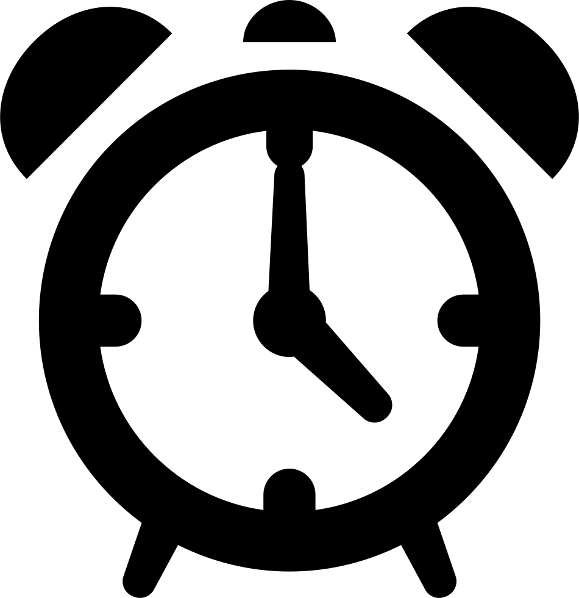

Pães & Boulos
Invadindo sua casa com sabor e alegria
Receitas
História
Contato
Pane Enroladito de Presun't Quejo
Você vai precisar de:
1 xícara de leite morno
10g de fermento biológico
1/4 de xícara de óleo
1/4 de xícara de açúcar
4 ou 3 xícaras de farinha de trigo
Como fazer:
Misture o Leite morno ao fermento até dissolver
Deixe descansar por
5
minutos

Adicione o óleo, o açucar e o sal e misture
Vá adicionando farinha até que a massa não cole mais nas mãos
Sove a massa até que fique lisinha
Deixe descansar por
45
minutos
Abra a massa e recheie com os ingredientes da sua preferência
Se preferir divida a massa em duas para fazer dois pães menores